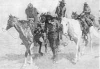

There are two great sins in hunting. The first is to attempt a shot beyond your abilities and by doing so allow the escape of a wounded animal. Of course, even the most conscientious outdoorsman can't guarantee that he or she will always make a quick, clean kill. There are simply too many things that can go wrong in the fraction of a second between the final tightening of the trigger finger and the bullet's impact. The second transgression, though, can be avoided and is thus unforgivable: It is the failure, through laziness or lack of preparation, to make a good effort to find, end the suffering of and recover wounded game. The skill required, of course, is tracking, and it's an art that's unknown to all too many modern hunters.
It Starts With the Shot
Many tracking problems can be avoided by simply using all of your powers of observation at the moment you pull the trigger. When shooting at long range, listen for the sound of the bullet striking. This distinctive "thunk" can be heard for a good distance on a quiet day. Even more important, don't take your eyes off the animal until it's either clearly dead or out of sight. Watch for indications of a hit: a stumble, a humping of the back, a quick kick of the front or rear legs (often indicating a heart shot) or a flicking of the tail or head.
If the animal is down, stay calm and keep your weapon ready for a few minutes before approaching. More than one hunter who has excitedly run up to even such a timid animal as a whitetail deer has received serious injuries when the stunned creature recovered. At the least, a careless approach could leave you unprepared to shoot at a suddenly up-and-running target.
Should you be sure you've hit the animal but not downed it, try to maintain your calm as best you can and continue to shoot. Once a creature is wounded, you've effectively entered into a contract to finish the job. If you can do it before the beast clears the next ridge or disappears into the brush, your day will be shorter and far more rewarding.
Let's say that you've made your best effort, only to have the animal run off: First and foremost, never simply assume that you've missed. "Missed" shots account for innumerable dead and wasted game animals every year. Instead, make sure your gun or bow is ready, and - keeping your eyes on the area where the animal was last seen - stalk slowly to the spot where it stood when the shot was fired. Once there, search the area thoroughly for evidence of a hit. An archer should first look for his or her arrow; often a seemingly missed shot will have actually passed through the animal and will provide ample evidence of having done so. A gun hunter should look for bits of clipped hair or traces of blood.
There's been a good bit written about analyzing the blood trail in order to determine where an animal has been hit. According to the accepted wisdom, bright, frothy blood is evidence of a lung hit (which will usually down the animal within 100 yards), a dark spoor with bits of food in it indicates a gut shot (and a long tracking job), while a heavy trail of bright blood indicates a hit in an artery (which will most likely make for easy, and relatively brief, tracking). I must confess that this theory hasn't helped me very often, though. I've found such clear evidence to be rare. Still, try to notice those telltale clues. If nothing else, by doing so you'll be tuning your powers of observation for the job at hand.
If no blood is evident at the site of the shot, move slowly along the path that the animal followed after you fired. Look for tracks; if any are available, take careful note of their size and shape, and memorize any peculiarities (if you're lucky enough to be dealing with a distinctive track). You may have to pick out your animal's trail from others as the day goes on. Continue to look for any sign of blood. And don't limit your search to the ground. High grass, the leaves and stems of brush and the like will often pick up spoor from the animal's coat, even if the bleeding isn't heavy enough to drip freely.
Should you find no blood by searching up to the spot where your quarry disappeared, but feel that you did hit the animal, go on to cover the surrounding area. Mark the point where you lost sight of the beast ( a scrap of tissue paper is good for this purpose), and then scan out from that spot, looking for dense cover, fallen logs and anything else that might shelter a wounded creature. Once you've made a thorough search of the terrain without picking up any evidence of a hit, you'll have done about all you can do, other than hope that you did, indeed, miss, and perhaps check the area after 24 hours for signs of crows, turkey buzzards, magpies or other predatory birds that might lead you to a well-hidden animal.
More often than not, though, if you did score a hit, a careful search will turn up sign. Once that happens, your responsibilities multiply and real tracking begins. The first question you'll have to answer is when to start on the trail. Many authorities say it's advisable to wait before following a blood trail in order to "let the animal stiffen up." Advice on exactly how long to wait, however, can range from 15 minutes to 12 hours, depending upon which source you consult. Frankly, I don't think that any hard and fast rule can apply here. Factors such as weather, terrain, time of day and - when it's known - the type of injury sustained by the animal must be taken into account before making a decision.
Should you be faced with a tracking job during a rain- or snowstorm, for example, get to the task immediately, before blood spoor is covered or washed away. A shot made at twilight, too, should be followed up quickly, as tracking by flashlight is extremely difcult (and could result in your being accused of illegal jacklighting). An animal wounded in open country will tend to travel farther before holing up than will one in thick brush, and - especially if you're hunting with a rifle - you might want to begin tracking immediately, moving slowly and scanning ahead for the chance to end the stalk with a well-placed long-range shot. If none of these other factors apply, and you're certain that your hit was in the heart/lung area, I'd suggest waiting 15 minutes or so, as much to allow yourself to calm down as anything else, then stalk slowly along the trail, marking each piece of evidence with tissue paper and stopping at regular intervals to scan your surroundings for the animal. In this case, you'll seldom have to travel more than 100 yards before collecting your game. Should you be less sure of the quality of your hit, and, again, if none of the other factors are in play, you might want to wait a bit longer, say a half-hour to 45 minutes, but more important than waiting is to follow the trail slowly and stay alert. Your aim is to see a wounded animal before it sees you.
So move along, constantly checking ahead, to the side and behind you (game will often circle back when hit); look for blood on the ground, on grass, brush, etc., and mark every piece of sign you find. In between blood spots, follow tracks if possible, or even get down close to the ground to scan ahead for a pattern of brushed-aside grass or broken plants. (I recently followed a bear in British Columbia that had left a trail of bent-over flower leaves. The undersides of the plants were a powdered metallic white, and, from the right angle, his path was as clear as a trail of silver dollars.)
Tracking is best done by a two-person team, one of whom remains at the last sign and scans the area while the other looks for spoor. If you lose the trail, cast ahead in increasing arcs along the animal's suspected line of travel. (Don't be afraid to get down on your hands and knees.) If you don't have a partner to help you track, make sure to leave an obvious mark on the last piece of sign you've found. Should you fail to turn up any blood or tracks after a thorough search, range out from the last spoor to check any terrain feature that might attract, or give evidence of, a fleeing animal. Game or foot trails, especially those leading downhill, appeal to a creature trying to follow the path of least resistance, and are often clear enough to take tracks. (Here's where the ability to identify your animal's footprint might come into play.) Brush, deadfalls and the like offer shelter, while water seems to attract wounded game and often gives the hunter a chance to find a clear track.
If you conscientiously perform every task described so far, you'll be dressing out meat at least nine times out of 10. However, if this effort still doesn't end your hunt, go back to the last sign and, walking in gradually increasing circles, cover the area, working slowly and keeping alert to your surroundings, until you either find the animal, locate a fresh blood trail or run out of daylight. And if the latter happens without your finding your trophy (which is unlikely), come back the following day to pick up any trail markers you've left and to give scavengers a chance to lead you to the kill.
Careful, conscientious, stubborn tracking will recover a badly wounded animal almost every time and will usually allow you to bring in game that was hit but would have otherwise survived. More than that, it fulfills the contract you signed with the pulling of the trigger, and can replace the horror of a flubbed shot with the satisfaction of bringing in game that a less-committed hunter would have abandoned to suffering and a wasted death.
|
 |
|
|